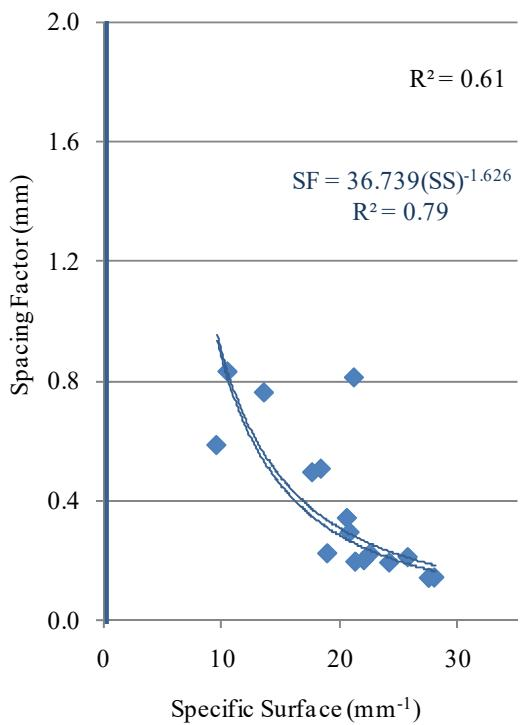

Air-Void Analysis
Air-void analysis is the systematic evaluation of the microscopic bubble structure within concrete to assess its capacity for freeze-thaw durability. This structural system functions by providing internal pressure relief valves that accommodate the volumetric expansion of water as it freezes, thereby preventing hydraulic stress-induced cracking in the cement paste matrix [1] [2]. The integrity and performance of this system are determined by three fundamental parameters: the total volume of entrained air, the size distribution of the voids expressed as specific surface area, and their spatial arrangement quantified by the spacing factor [3] [4] [5]. Comprehensive assessment requires measuring these properties to verify that the bubble distribution is adequate for protecting the concrete matrix from expansion damage during cyclic freezing and thawing events [3] [2].
CP Tech Center reports covering “Air-Void Analysis” also include the following subtopics: Air Void Analyzer, RapidAir Test, and Super Air Meter.
Air-Void Analysis evaluates the microstructure of concrete to predict long-term performance against freeze-thaw damage. The Air Void Analyzer quantifies the air void spacing factor and specific surface in fresh concrete by measuring buoyancy changes as voids are released from a glycerol-water mixture, directly providing the critical parameters required to evaluate freeze-thaw durability. For hardened material, the RapidAir Test characterizes the air-void system by using automated imaging of polished cross-sections to quantify critical parameters such as spacing factor and specific surface. In fresh concrete, the Super Air Meter quantifies air-void quality through sequential pressure measurements to ensure adequate freeze-thaw durability.
Sources (10)
Sub-concepts (3)
Fundamentals
The integrity of the air-void system is fundamentally governed by the homogeneity achieved during concrete mixing, which depends on matching mixer configurations and operational parameters to ensure uniform distribution of constituents [6]. Proper control of mixing duration prevents structural defects such as inhomogeneity from insufficient blending or air loss due to excessive agitation, thereby preserving the designed void characteristics essential for durability [6].
The impact of these mixing variables on air content is illustrated in the figure below.
 Effects of mixing method on the air content of fresh concrete [6]
Effects of mixing method on the air content of fresh concrete [6]
The figure displays a bar chart comparing the total volume of entrained air across three different cementitious mixtures using three distinct mixing protocols. The source text explains that this drop in air content for premixed samples is due to the limited ability of fine binder materials to entrap air during slurry mixing, which directly impacts the integrity of the air-void system.
Key findings
- Identified a critical gap in real-time quality assurance for air systems during construction, as current destructive testing methods cannot be applied to finished slabs without removal [7].
- Revealed that conventional fresh concrete tests measuring only total air content are insufficient for ensuring freeze-thaw durability, as approximately half of projects meeting air content specifications still exhibited unacceptable spacing factors [4].
- Observed that the Air Void Analyzer tends to predict larger spacing factors than RapidAir, indicating a less durable structure for equivalent samples, whereas RapidAir often predicts higher specific surface values [4].
- Noted significant challenges regarding test variability and precision due to inconsistencies in equipment design, fluid viscosity, and operator procedure, which often lead to poor correlation with hardened concrete standards [5].
- Showed that the effectiveness of air void analysis in predicting freezing-thawing durability is contingent on the concrete’s permeability, water-to-binder ratio, and strength [2].
- Established distinct threshold criteria for adequate protection depending on the measurement method, with a spacing factor of 0.28 mm or less measured by an Air Void Analyzer or 0.22 mm or less measured by RapidAir indicating sufficient protection [2].
- Highlighted that traditional specifications relying on total air content have limited correlation with long-term durability, necessitating a shift toward performance-engineered mixtures that assess the quality of the air-void system in fresh concrete [1].
Quality Control and Standardized Testing Methods
Evidence: 10 reports (8 primary)
Air-void analysis evaluates the microscopic bubble structure within concrete, which serves as a primary defense against freeze-thaw deterioration by providing voids for expanding ice and reducing internal hydraulic pressures [2]. The integrity of this system is determined not just by total volume but by bubble size distribution and spacing factor, which dictate how effectively the concrete can mitigate internal stress during cyclic freezing events [1]. Standardized testing methods exist to evaluate these properties in both fresh and hardened states, ranging from microscopic image analysis to sequential pressure measurements that infer void structure characteristics [1].
The figure below illustrates the sequential pressures applied during the SAM test and the subsequent calculation of the SAM number.
 Sequential pressures applied in the SAM and calculation of the SAM number [1]
Sequential pressures applied in the SAM and calculation of the SAM number [1]
The figure displays a pressure-time graph illustrating the sequential pressurization method used to characterize the air-void system in fresh concrete. It plots the pressures of the top chamber (Pc) and bottom chamber (Pa) against equilibrium pressure, showing how these values are measured at specific intervals to determine a SAM number.
Research problem — Current quality control practices are insufficient because they rely on total air volume measurements that fail to capture the critical spacing and size distribution of voids, which determine freeze-thaw durability [1] [4]. The increasing use of supplementary cementitious materials introduces chemical variability and instability in fresh concrete that standard testing protocols cannot adequately predict or control [3] [7] [6] [8]. There is a significant lack of correlation between fresh-state air-void analysis results and hardened concrete durability properties, complicating the establishment of reliable acceptance criteria [5] [2] [9]. Field placement operations and specific mixing methods alter the air-void structure in ways that laboratory samples do not replicate, creating a gap between designed mix properties and actual field performance [10] [7] [6].
The figure below illustrates the relationship between durability factor and the percentage of air and spacing factor in air-entrained samples.
 Venn diagram illustrating the intersection of air-void parameters and durability factor thresholds. [2]
Venn diagram illustrating the intersection of air-void parameters and durability factor thresholds. [2]
The figure displays a Venn diagram with three overlapping circles representing specific ranges for durability factor (DF), air content (AIR), and spacing factor (SF). This visualization demonstrates the relationship between air structure and durability factor, showing that samples meeting specific air content and spacing requirements achieve high durability factors.
State of the art — Quality control practices have shifted from relying solely on total air content measurements toward comprehensive characterization of the void system using automated fresh-state tools like the Air Void Analyzer and Super Air Meter to better predict freeze-thaw durability [1] [4]. Industry standards increasingly mandate specific performance thresholds, such as limiting the air void spacing factor to 0.2 mm or less and utilizing Statistical Process Control to monitor mix stability rather than relying on static acceptance testing [5] [2]. Current consensus acknowledges significant variability in automated fresh-state measurements compared to hardened laboratory methods, driving a move toward standardized procedures and Performance Engineered Mixtures that correlate field metrics with long-term durability [1] [5].
The following figure illustrates an Air Void Analyzer.
 Air Void Analyzer [4]
Air Void Analyzer [4]
The image displays a stainless steel Air Void Analyzer, an automated fresh-state tool designed for mobile laboratory use. This apparatus is used to evaluate the air void system of fresh concrete accurately on the jobsite, including total volume of air, size of air voids, and distribution of air voids. By providing this information, quality control adjustments to concrete batching can be made in real time to improve the air void spacing and thus increase freeze-thaw durability.
Findings from the reports
- Identified a weak relationship between total air content and spacing factor, demonstrating that standard fresh concrete measurements do not reliably predict the actual hardened air-void structure [4] [6].
- Observed that Air Void Analyzer (AVA) results are consistently more conservative than RapidAir tests, with AVA predicting larger spacing factors and lower specific surface values for equivalent samples [4] [2].
- Demonstrated that approximately half of projects meeting fresh concrete air content specifications still exhibited unacceptable spacing factors in hardened state testing [1] [4].
- Established that two-stage mixing processes reduce total air content because fine binder materials absorb the air-entraining agent, leading to increased spacing factors compared to conventional dry batch methods [6].
- Found that AVA test results suffer from significant variability due to non-standardized procedures and fluid viscosity influences rather than operator skill or ambient temperature [5].
- Revealed that slipform paving significantly reduces the volume of large air voids but has little statistically significant effect on the overall spacing factor across most sampling locations [4].
- Showed that for non-air-entrained low-permeability concrete, durability increases as the water-to-binder ratio decreases, with specific limiting ratios required to achieve high durability factors without entrained air [2].
- Noted that hardened concrete analysis revealed wide variability in spacing factors across ternary mixtures, with some samples exhibiting poor structure despite adequate total air content [8].
- Indicated that construction-related issues played a larger role in observed scaling resistance than slag dosage or specific air-void parameters alone in certain field applications [9].
- Underscored the necessity of assessing the air-void structure in both fresh and hardened states, as laboratory analysis often indicated marginal to poor characteristics despite acceptable fresh concrete measurements [1].
Novelty & rigor — The primary methodological contribution is the integration of fresh concrete air-void analysis into mobile laboratory frameworks, enabling real-time quality control adjustments based on spacing factor and specific surface data rather than relying solely on delayed hardened-state validation [4]. Reproducibility in this domain is achieved through rigorous standardization of equipment protocols, including precise control over fluid viscosity and stirring energy, alongside the implementation of statistical process control to monitor material variability across diverse regional conditions [4] [5]. A critical cross-cutting insight is the establishment of distinct durability thresholds for different testing technologies, revealing that acceptance criteria must be calibrated specifically to the instrument used, as methods like the Air Void Analyzer and RapidAir yield divergent numerical values for equivalent structural performance [2].
The figure below illustrates the relationships between air void parameters measured by Rapid Air.

Relationships between air void parameters measured by Rapid Air [2]The figure plots the spacing factor against specific surface area, displaying a downward trend where higher specific surface values correspond to lower spacing factors.
Reported values
| Parameter | Value | Context | Source |
|---|---|---|---|
| air content | >6±1 percent% | expected for good concrete freeze-thaw resistance | [10] |
| durability factor | 85 percent% | Mix 1 and 2 | [10] |
| spacing factor | 0.008 in. | associated with SAM value below 0.2 | [10] |
| spacing factor | ≤ 0.20 mm | expected for good concrete freeze-thaw resistance | [10] |
| difference between air content and SAM | 0.1% | Type B air meter vs SAM | [1] |
| difference in air content | 0.1% | between Type B air meter and SAM | [1] |
| percentage of data exceeding limit | 14% | data above 0.30 | [1] |
| percentage of results above acceptance limit | 14% | results above the recommended acceptance limit of 0.30 | [1] |
| acceptance agreement | 45% | between AVA spacing factor and the F-T durability factor | [5] |
| acceptance agreement | 89% | between C457’s 0.008 in. spacing factor and the F-T durability factor | [5] |
| air content acceptance criterion | 5% | C231 measurements | [5] |
| air content acceptance criterion | approximately 3% | AVA measurements | [5] |
| air content | 6% | measured with ASTM C231 | [2] |
| spacing factor | 0.2 mm | entrained air systems meeting criteria for high durability | [2] |
| spacing factor | 0.22 mm | measured using RapidAir | [2] |
29 more distinct values omitted here; the full span-verified set is in the quantities sidecar.
Across the reviewed reports, standardized air-void analysis methods such as the Air Void Analyzer (AVA), RapidAir, and Super Air Meter are collectively established as superior to traditional total air content measurements for quality control because they directly characterize critical structural parameters like spacing factor and specific surface that govern freeze-thaw durability. Significant methodological trade-offs exist across these standardized tests, as AVA results are consistently more conservative than RapidAir measurements due to differences in detection limits and sample preparation, while Super Air Meter field data often reveals marginal void structures that contradict fresh-state air content specifications. The collective evidence indicates that achieving adequate durability requires proactive mixture proportioning and strict control of test variables like fluid viscosity, as reliance on reactive field acceptance testing or total air content alone frequently fails to prevent poor spacing factors and subsequent scaling in hardened concrete. [1] [4] [5] [2] [9] [8]
The following figure illustrates the air-void analyzer used to perform these standardized tests.
 Air-void analyzer (AVA) apparatus used for measuring air-void structure parameters in fresh concrete. [5]
Air-void analyzer (AVA) apparatus used for measuring air-void structure parameters in fresh concrete. [5]
The image displays a stainless steel Air-Void Analyzer (AVA), which is an automated instrument designed to measure the air-void system of fresh concrete. This equipment was developed by Dansk Beton Teknik and is also referred to as the Danish Air Test in North America. The AVA procedure is used to measure entrained air and determine the size, distribution, spacing factor, and specific surface of the air-void system.
Implications — Quality control protocols must transition from relying on total air content to monitoring structural parameters like spacing factor and specific surface, as volume metrics alone are insufficient for predicting freeze-thaw durability [4] [5]. Agencies should implement continuous statistical process control frameworks that treat air-void analysis tools as early-warning indicators of uniformity rather than definitive pass-fail acceptance metrics [4]. Standardized testing methods require method-specific acceptance criteria because different analytical techniques yield distinct critical limits for the same physical properties, necessitating rigorous calibration and training to ensure data reliability [5] [2].
The following figure illustrates how ambient temperature, water-to-cement ratio, and vibrator energy influence these statistical parameters.
 Statistical analysis—effects of ambient temperature, concrete w/cm, and vibrator energy effect [5]
Statistical analysis—effects of ambient temperature, concrete w/cm, and vibrator energy effect [5]
The figure displays a matrix of plots analyzing the sensitivity of gravimetric air content and Air-Void Analysis (AVA) parameters to variations in temperature, water-to-cement ratio, and vibrator frequency. While gravimetric measurements showed little effect from concrete w/cm, the AVA measurements exhibited a noticeable response to this variable. The data demonstrates that structural parameters like spacing factor and specific surface are significantly more sensitive to mixing energy than total volume metrics.
Limitations — There is a weak correlation between fresh concrete properties and hardened state performance, particularly in two-stage mixing processes where fine particles absorb air-entraining agents [6]. Different methodologies yield unequal results for the same parameters due to distinct measurement mechanisms, complicating direct application of acceptance criteria across methods [4]. High measurement variability and poor correlation with established durability metrics indicate that reliance on total air content may be less critical than focusing on small void frequencies for durability control [5]. Critical thresholds for freeze-thaw durability are method-dependent rather than universal, as techniques assess distinct sample conditions and void size ranges [2].
Advanced Monitoring and Field Evaluation Techniques
Evidence: 1 report (1 primary)
State of the art — The industry is shifting from method-based specifications toward performance-related standards that require measuring mix properties such as air content and spacing to ensure durability [7]. Because standard destructive tests are impractical for continuous monitoring behind paving equipment, the field is actively developing nondestructive intelligent construction systems capable of real-time sensing of air content and bubble spacing [7].
Findings from the reports
- Identified a critical gap in real-time quality assurance for air systems during construction, as current destructive testing methods cannot be applied to finished slabs without removal [7].
- Demonstrated that the Air Void Analyzer is not suited for continuous field application behind paving equipment despite providing accurate data on bubble quantity and spacing [7].
- Revealed a pressing need to develop nondestructive sensing technologies that can monitor air content properties in plastic concrete to enable automatic adjustments to mix proportions and paver parameters [7].
Novelty & rigor — The research introduces nondestructive Intelligent Construction System sensors that enable continuous, real-time monitoring of air content and bubble spacing directly behind the slipform paver during placement [7]. This approach uniquely shifts quality assurance from post-placement verification to in-process control by allowing automatic adjustments to mix proportions and paver parameters, thereby addressing air loss caused by paving operations that traditional destructive tests overlook [7].
Implications — The industry must transition from destructive, post-placement testing to nondestructive, real-time sensing technologies that monitor air content and bubble spacing immediately behind the paver [7]. Developing rugged, automated equipment for continuous quality assurance is essential to enable automatic adjustments to mix proportions during construction, thereby compensating for the significant reduction in entrained air caused by placement activities [7].
Limitations — Standard testing protocols typically sample material at the plant or before paving, thereby ignoring the significant reduction in entrained air caused by placement activities like slipform paving [7]. Destructive tests required for post-paving verification are not currently performed behind the paver, creating a risk of inadequate freeze-thaw durability due to this gap in real-time monitoring [7].
Related concepts
In this hierarchy
- Parent: Durability & Materials-Related Distress
- Child: Air Void Analyzer
- Child: RapidAir Test
- Child: Super Air Meter
Related by shared evidence
- CP Tech Center Reports — shares 10 reports
- Air Entraining Agent — shares 9 reports
- Cementitious Materials & Chemistry — shares 9 reports
- Concrete Materials & Mixtures — shares 9 reports
- Air Void Analyzer — shares 8 reports
- Fly Ash — shares 8 reports
- Supplementary Cementitious Materials — shares 8 reports
- Freeze-Thaw Durability — shares 7 reports
Similar topics
- Air Void Analyzer
- RapidAir Test
- Super Air Meter
- Air Entraining Agent
- Freeze-Thaw Durability
- Durability & Materials-Related Distress
- Air Permeability Test
- Low-Permeability Concrete
References
- J. Gross, J. Weiss, T. Ley, P. Taylor, N. Weitzel, T. Van Dam, G. Smith, and C. Jones, "Performance-Engineered Concrete Paving Mixtures," National Concrete Pavement Technology Center, Iowa State University, Ames, IA, Rep. TPF-5(368), 2022. [Online]. Available: https://www.intrans.iastate.edu/wp-content/uploads/2023/04/performance-engineered_concrete_paving_mixtures_w_cvr.pdf
- K. Wang, G. Lomboy, and R. Steffes, "Investigation into Freezing-Thawing Durability of Low-Permeability Concrete with and without Air Entraining Agent," National Concrete Pavement Technology Center, Ames, IA, 2009. [Online]. Available: https://www.intrans.iastate.edu/wp-content/uploads/2018/03/low-permeability-concrete.pdf
- P. Tikalsky, V. Schaefer, K. Wang, B. Scheetz, T. Rupnow, A. St. Clair, M. Siddiqi, and S. Marquez, "Development of Performance Properties of Ternary Mixes, Phase 1," Center for Transportation Research and Education, Ames, IA, Rep. TPF-5(117), 2007. [Online]. Available: https://www.intrans.iastate.edu/research/completed/development-of-performance-properties-of-ternary-mixes-phase-1/
- J. Grove, G. Fick, T. Rupnow, and F. Bektas, "Material and Construction Optimization for Prevention of Premature Pavement Distress in PCC Pavements," National Concrete Pavement Technology Center, Ames, IA, Rep. TPF-5(066), 2008. [Online]. Available: https://www.intrans.iastate.edu/wp-content/uploads/2018/03/mco-final.pdf
- K. Wang, M. Mohamed-Metwally, F. Bektas, and J. Grove, "Improving Variability and Precision of Air-Void Analyzer (AVA) Test Results ..., Phase I," Center for Transportation Research and Education, Ames, IA, 2008. [Online]. Available: https://www.cptechcenter.org/wp-content/uploads/2018/03/ava-1.pdf
- T. D. Rupnow, V. R. Schaefer, K. Wang, and B. L. Hermanson, "Improving PCC Mix Consistency and Production Rate through Two-Stage Mixing," Center for Transportation Research and Education, Ames, IA, Rep. TR-505, 2007. [Online]. Available: https://www.intrans.iastate.edu/wp-content/uploads/2018/03/two-stage-mix-1.pdf
- D. Harrington, R. Rasmussen, D. Merritt, T. Cackler, and P. Taylor, "Long-Term Plan for Concrete Pavement Research and Technology—The Concrete Pavement Road Map (Second Generation): Volume II, Tracks (FHWA-HRT-11-070)," National Center for Concrete Pavement Technology, Iowa State University, Ames, IA, 2012. [Online]. Available: https://www.fhwa.dot.gov/publications/research/infrastructure/pavements/pccp/11070/11070.pdf
- P. Taylor, P. Tikalsky, K. Wang, G. Fick, and X. Wang, "Development of Performance Properties of Ternary Mixtures: Field Demonstrations and Project Summary," National Concrete Pavement Technology Center, Ames, IA, Rep. TPF-5(117), 2012. [Online]. Available: https://www.intrans.iastate.edu/wp-content/uploads/2018/03/ternary_final_w_cvr.pdf
- P. Taylor and X. Wang, "Deicer Scaling Resistance of Concrete Mixtures Containing Slag Cement, Phase 3," National Concrete Pavement Technology Center, Ames, IA, Rep. TPF-5(100), 2014. [Online]. Available: https://www.intrans.iastate.edu/wp-content/uploads/2018/03/deicer_scaling_w_cvr.pdf
- X. Wang, P. Taylor, and D. King, "Evaluation of Modified Concrete Mixture Proportions for the City of West Des Moines," National Concrete Pavement Technology Center, Ames, IA, 2016. [Online]. Available: https://www.intrans.iastate.edu/wp-content/uploads/2018/03/WDM_modified_concrete_mixture_proportions_w_cvr.pdf
Feedback on this page